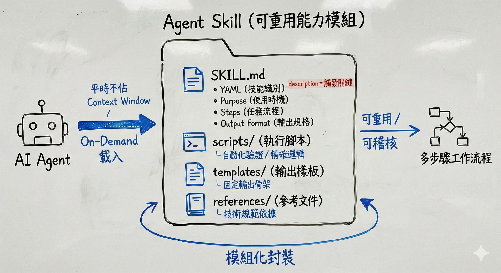

Agent Skill 的目錄組成結構說明與範本
關於 Agent Skill 的目錄組成元素說明與範本檔案，可參考我的 Gist：https://reurl.cc/1kyZAQ
Agent Skill 是一種「可攜、可版本控管的能力封裝」，通常以一個目錄形式存在，內含：
- 指令（instructions）
- 腳本（scripts）
- 資源（resources）
Agent 可發現並在需要（On-Demand）時載入/使用這些技能，平常不佔用 Context Window，只有在使用者觸發特定任務時，Agent 才會使用該技能。如此能以更準確、更有效率且更經濟實惠地（不耗費過量的 tokens）地完成任務。
Skill 目錄結構說明
根據 agentskills.io 的開源規格，一個 Skill 並非單一檔案，而是一個具備結構的目錄。這種設計是為了確保技能可以被獨立封裝、版本控管，並能在不同的開發環境（如 VS Code 或 Claude Code）中維持一致的行為。
以下是 Skill 目錄組成結構的簡要說明：
SKILL.md：核心合約與邏輯
用途：這是 Skill 的定義文件，也是 Agent 讀取的主要內容。
- YAML Frontmatter：定義技能名稱與用途，供 Agent 進行技能發現（discovery）。
- Purpose：說明「何時應使用這個 Skill」。
- Steps：固定任務流程，避免模型即興生成。
- Output Format：明確規範輸出結構，降低不一致風險。
- Examples（建議）：提供輸入與輸出範例，提高準確度。
一個符合上述格式的 SKILL.md 範本示例：
---
name: web-ui-testing
description: 進行網站操作驗證並回傳結果
---
## Purpose
當需要驗證 Web 操作流程時使用此技能。
## Steps
1. 開啟指定網址
2. 執行操作步驟
3. 擷取結果
## Output Format
請以 JSON 格式回傳測試狀態與說明。
關於
description的觸發邏輯Agent 在技能發現（discovery）階段，通常會依據
name與description判斷是否應觸發此 Skill。它直接定義了觸發時機：只有當使用者的 Prompt 需求與此描述高度匹配時，Agent 才會精準地「喚醒」並載入該 Skill 的完整內容。因此，描述中必須清楚包含動作導向的關鍵字（如：生成、重構、檢查），這直接決定了 Agent 判斷是否自動載入的準確度。
scripts/（執行腳本）
用途：存放輔助任務的腳本範本，用於處理 Agent 難以透過語言推論完成的精確邏輯，如複雜的格式轉換或自動化校驗。
例如，我們可以寫一個腳本 verify-test-audit.js，讓 Agent 在執行 Web UI 測試任務時呼叫。強制檢查產出的測試腳本是否包含「截圖驗證」步驟，確保自動化流程具備「視覺證據」供日後稽核。
// 使用 Node.js 強制檢查測試腳本是否具備稽核能力
const fs = require('fs');
const testFile = process.argv[2];
const content = fs.readFileSync(testFile, 'utf8');
// 規範：Web UI 測試必須包含 page.screenshot 以留存證據
if (!content.includes('page.screenshot')) {
console.error("驗證失敗：測試腳本缺少『截圖』步驟，不符合專案稽核規範。");
process.exit(1); // 終止並要求 Agent 修正測試邏輯
}
console.log("驗證通過：測試腳本具備自動化稽核能力。");
templates/（輸出樣板）
用途：負責定義輸出的「骨架」，確保 Agent 產出的內容結構永遠符合預期，不隨意跑版。
例如，我們可以為 Web UI 測試建立一個測試案例文件結構，以確保輸出格式的統一樣式。
UI_TEST_CASE_TEMPLATE.md
# UI 測試案例：{{test_title}}
## 1. 測試目標
- {{objective}}
## 2. 操作步驟
1. 導航至：{{url}}
2. 預期行為：{{expected_behavior}}
## 3. 稽核證據
- [ ] 必須包含截圖：{{screenshot_name}}.png
references/（參考文件）
用途：存放相關技術文件或規範說明，供技能在需要時引用。
例如，讓 Agent 在撰寫測試腳本時有明確的規範可循（如定位器選取優先順序），從而大幅降低無效程式碼的產生。
playwright-locator-rules.md
# Playwright 定位器優先規範
為了提升測試穩定性，請依序使用以下定位器：
1. **data-testid**: `page.getByTestId()` (首選)
2. **Role**: `page.getByRole()` (語意化標籤)
3. **Text**: `page.getByText()`
4. **禁止使用**: 易碎的 CSS Selector (如 `.btn-01`) 或絕對路徑 XPath。
如何有效驗證 Skill 的完整性？
建立 Skill 不只是撰寫 SKILL.md，更重要的是確保其結構正確、欄位完整、觸發描述清晰。
在實務上，驗證 Skill 完整性可從三個面向檢查：
- 是否具備必要的 YAML Frontmatter（特別是
name與description） - 是否清楚定義 Purpose、Steps 與 Output Format
- 是否存在與說明一致的 scripts / templates / references 結構
為了避免人工疏漏，可使用官方提供的範例 Skill —— skill-creator。它除了作為建立 Skill 的範本外，也提供一種標準化結構參考，可用來比對與驗證自訂 Skill 是否符合規格。
